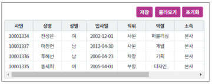
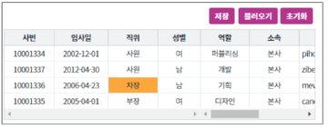

GridView를 개인화 하는 예제입니다. GridView의 Style 정보를 읽고, localStorage를 활용해 저장하여 구현합니다. 컬럼의 순서, 행렬 틀 고정, 컬럼 숨김 등 적용 가능합니다.
GridView 우클릭 컨텍스트 메뉴 활성화
GridView 컬럼 이동 활성화
GridView 틀 고정, 컬럼 숨기기, 크기 조정 내용 저장, 불러오기, 초기화 구현
GridView의 셀 넓이, 위치, 컬럼 숨기기, 틀 고정, 컬럼 이동 등 상태를 조작합니다.
[브라우저(Chrome) 실행 예시]
조작 전

조작 후

GridView 조작 후 저장 버튼을 눌러 상태를 저장합니다.
초기화 버튼을 누르거나 페이지를 새로고침 해 GridView를 조작 이전 상태로 되돌립니다.
불러오기 버튼을 클릭해 저장된 정보를 불러옵니다.
GridView의 함수 getCurrentGridStyle을 이용해 style 정보를 얻습니다.
$p.local.setItem() 함수를 이용합니다.
[소스 코드 예시]
/** * 영역 [GridView 개인화 샘플]의 * 입력 [btn_save]의 onclick 이벤트 함수 */ scwin.btn_save_onclick = function(e) { // 현재 gridView 스타일 정보 가져오기 var grd_style = grd_main.getCurrentGridStyle(); // localStorage에 gridView의 style 저장 $p.local.setItem("grd_style", grd_style); };
$p.local.getItem() 함수를 이용합니다.
GridView의 setGridStyle 함수를 이용합니다.
[소스 코드 예시]
/** * 영역 [GridView 개인화 샘플]의 * 입력 [btn_load]의 onclick 이벤트 함수 */ scwin.btn_load_onclick = function(e) { // localStorage에 저장한 gridView 스타일 정보 가져오기 var grd_style = $p.local.getItem("grd_style"); // 현재 gridView의 style 정보 적용 grd_main.setGridStyle(grd_style); };
getCurrentGridStyle()
setGridStyle( styleObj )
[웹스퀘어5 SP5 개발 가이드] GridView
링크 : https://docs1.inswave.com/sp5_user_guide/bc10c1b82c9a2a0b#e1c4658baf7e726f
[웹스퀘어5 SP5 개발 가이드] localStorage
링크 : https://docs1.inswave.com/sp5_user_guide/db5edae0d31101bd#b339f5554937ecfb